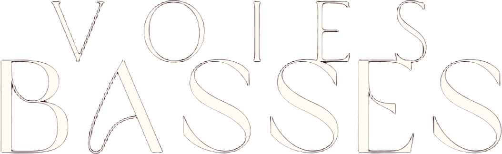
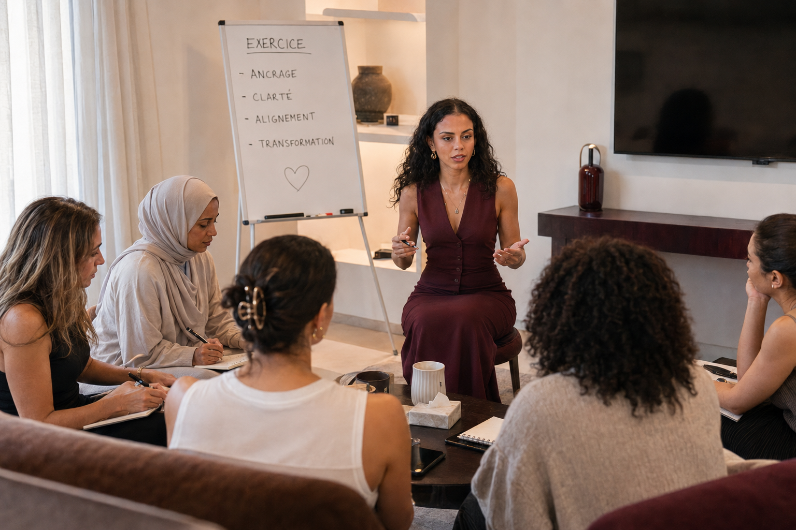

Schémas répétitifs
Les mêmes situations, les mêmes relations, les mêmes réactions. Tu ne comprends pas pourquoi tu reviens toujours au même point.

Tu ne tournes pas en rond par manque de volonté. Tu tournes en rond parce que personne ne t'a appris à lire tes propres schémas
Stratégie, psychologie, développement personnel : je relie ce que la plupart séparent pour aller chercher ce qui bloque vraiment, sous la surface. Pas une méthode de plus : la tienne, construite avec la même rigueur qu'un plan de marque.
Les mêmes situations, les mêmes relations, les mêmes réactions. Tu ne comprends pas pourquoi tu reviens toujours au même point.
Syndrome de l'imposteur, autocensure, difficulté à t'affirmer, sentiment de ne pas être légitime : tu te sais capable, mais quelque chose te retient.
Certaines émotions prennent parfois beaucoup de place et peuvent influencer ton quotidien, tes relations ou tes décisions. Tu souhaites apprendre à les identifier, les accueillir et les traverser avec plus de sérénité.
Tes relations te coûtent plus qu'elles ne te nourrissent.
Tu sais ce que tu veux faire, mais tu repousses en permanence. L'inaction t'épuise autant que l'action et tu ne sais parfois même pas par où commencer.
Tu ressens un décalage entre la personne que tu es profondément et la vie que tu mènes aujourd'hui. Tu as besoin de clarifier qui tu es, ce qui te fait vibrer et la direction que tu souhaites donner à ton parcours.

mon accompagnement
Être le regard extérieur qui identifie les blocages, points d'amélioration, et outils clés pour accompagner ton évolution.
Un espace d'écoute, sans jugement, où on affronte ce qui bloque pour pouvoir le traverser. Pas dans la douleur : avec structure, et de la bienveillance à chaque étape.
Un espace sans jugement où tes émotions sont entendues, et où on explore ensemble tes schémas, tes blessures et tes croyances.
La prise de conscience est déjà une transformation. On nomme, on valide, on relie les points entre eux.
Un plan d'action hyperconcret, adapté à ta situation, avec les bonnes ressources pour aller plus loin : y compris vers d'autres spécialistes quand ça compte.
On ancre les nouvelles postures dans ta réalité quotidienne, pour que la transformation soit durable.
ma méthode
Chaque échange t'apporte quelque chose de concret. Pas de théorie sans application.
Diagnostic clair de tes forces et de ce qui te bloque, plan d'action structuré, mise en œuvre suivie avec rigueur.
Identité, corps, pensées, travail, relations : tout est interconnecté. On ne traite jamais un point isolé du reste.
On ne reste pas en surface. On va chercher ce qui se joue vraiment : pour un changement qui dure.
Un espace entièrement dédié à toi, à ton rythme, pour aller au fond de ce qui te retient et construire un plan d'action personnalisé.

L'intelligence du groupe au service de ta transformation. Apprendre des expériences des autres, briser l'isolement et avancer ensemble.
Pour les organisations, écoles, associations ou collectifs qui souhaitent intégrer les outils de la transformation pour leurs équipes ou apprenants.
Pour les podcasts, conférences et événements qui souhaitent explorer les chemins de la transformation personnelle et de l'alignement.
Je suis Meriem.
Ma philosophie s'ancre dans une quête d'émancipation présente depuis mon plus jeune âge. Ce fil conducteur traverse l'ensemble de mes engagements professionnels, créatifs et associatifs, toujours animé par la même aspiration : comment se libérer de tout ce qui nous a été imposé (société, traumatismes, conditionnements, attentes) pour devenir pleinement nous-mêmes ?
Cette démarche, je l'ai d'abord mise au service de mon propre travail intérieur : psychologues, hypnothérapie, magnétisme, auriculothérapie, constellations familiales, EMDR, PNL, TCC, psychiatrie, énergéticiens… Six années de thérapie active, auxquelles s'ajoutent dix-sept ans de lectures, d'apprentissages et de formations autour du développement personnel. Ce long travail intérieur a été le meilleur investissement de ma vie. Traverser ces blocages et ces épreuves (attachements toxiques, traumatismes, anxiété chronique, deuil, diagnostic tardif de TDAH…) m'a permis de construire une vie profondément alignée avec qui je suis : libre, apaisée, authentique et entourée de relations saines, où je peux chaque jour exprimer ce qui m'anime, explorer mes multiples passions et créer avec sens.
Au début de mon parcours professionnel, je me suis naturellement tournée vers le marketing, une discipline fondée sur l'étude du comportement humain. En parallèle, je me suis investie dans l'accompagnement stratégique. En tant qu'intervenante et coach, j'ai accompagné des profils de tous âges et de tous horizons : étudiants, entrepreneurs, porteurs de projets, associations… J'ai observé la même chose à chaque fois : leur projet n'était jamais « juste » professionnel. Il prolongeait leur parcours de vie, incarnait leur passion et matérialisait leurs valeurs, leur mission et leurs zones de génie.
Mon accompagnement s'est alors approfondi. Au-delà de la stratégie, j'ai commencé à explorer avec eux leur identité, leur image et leur manière de travailler pour qu'elles soient plus alignées avec qui ils sont. J'ai vu que les véritables blocages se situaient souvent bien au-delà du projet lui-même : croyances limitantes, procrastination, mécanismes d'autosabotage, schémas hérités de l'enfance… J'ai compris que les difficultés financières, affectives ou professionnelles n'étaient souvent que la partie visible de l'iceberg.
C'est de ce croisement entre stratégie, pédagogie et développement personnel qu'est née ma méthode : une approche qui réunit stratégie, pédagogie et transformation personnelle, ancrée dans une vision holistique de l'épanouissement, où l'identité, le corps, les pensées, le travail, les relations, la créativité et l'image que nous projetons dialoguent en permanence.
Becoming a Living Work of Art
À travers mes accompagnements comme mon podcast, mon ambition est de créer un espace de confiance, un refuge où les Voix habituellement basses osent parler plus fort et se confier. Un lieu où révéler ensemble les chemins, les visions et les destinées les moins évidents, les moins empruntés : les Voies Basses.